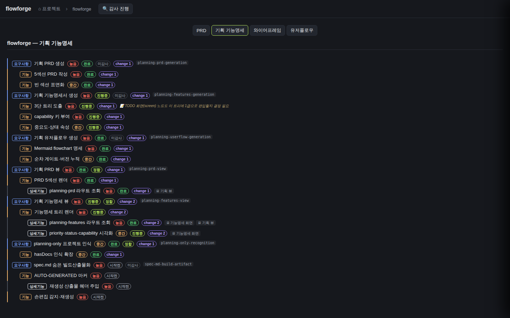

검증일: 2026-07-12T15:05:00+09:00 · 환경: — · run: run-20260712-1505 · commit 6197da27 (dirty)
PASS 4 · FAIL 0 · 검증 안 함 0 · SKIPPED 0
| Requirement | Scenario | Layer | 검증 수단 | 탐지 근거(basis) | 결과 | 증거 |
|---|---|---|---|---|---|---|
| capability↔change 매핑의 조인 원천을 features.md로 전환한다 | features.md capability로 실배지가 뜬다 | server | 라이브 API GET /api/docs/flowforge/planning-features 의 linkedChanges + parseFeatureCapabilities 단위/통합 테스트(픽스처 불필요, 실데이터) | curl 실응답 6개 capability에 linkedChanges 부착 · Jest parseFeatureCapabilities 4케이스 PASS · docs.ts:150 parseFeatureCapabilities 배선 grep 확인 | ✓ PASS | GET /api/docs/flowforge/planning-features → linkedChanges: planning-prd-generation: [2026-06-28-planning-stage-tracer] planning-features-generation: [2026-06-28-planning-features-generation] planning-userflow-generation: [2026-06-28-planning-userflow-generation] planning-prd-view: [2026-06-28-planning-stage-tracer] planning-features-view: [2026-06-28-planning-features-generation, 2026-07-08-planning-when-then-authoring] planning-only-recognition: [2026-06-28-planning-only-project-recognition] => features.md capability 6개에 실배지(픽스처 없이 실데이터). Jest: parseFeatureCapabilities 4/4 PASS. |
| archive된 change도 매핑 스캔에 포함한다 | archive change가 노드에 매핑된다 | server | 라이브 API linkedChanges가 전부 archive dated change(2026-*)임을 확인 + buildCapabilityIndex D2 테스트(archive 포함·archived=true·활성 병합·미매칭 unlinked) | 라이브 linkedChanges 6개 값 전부 openspec/changes/archive/2026-*/ 소속(활성 change와 교집합 0, design.md 실측 일치) · Jest D2 5케이스 PASS · capabilityIndex.ts:147-154 archive 1단계 재귀 grep 확인 | ✓ PASS | linkedChanges 값 6개 전부 archive dated change: 2026-06-28-planning-stage-tracer, 2026-06-28-planning-features-generation, 2026-06-28-planning-userflow-generation, 2026-06-28-planning-only-project-recognition, 2026-07-08-planning-when-then-authoring 활성 change(flowforge-*, propose-flowforge-link, planning-audit-trigger) specs ∩ features 키 = 0. => archive 제외였다면 배지 0이었을 것. archive 포함으로 6개 실배지. Jest D2: archive 포함/archived=true/활성 오염 안 함/활성+archive 병합/archive 미매칭 unlinked = 5/5 PASS. |
| 다른 docs/spec.md 소비자와 다른 프로젝트를 저촉하지 않는다 | wowa-app planning 뷰 무저촉 | server | 라이브 API로 wowa-app planning-features(파일없음 폴백)·graph·projects 동작 확인 + D4 회귀(파일없음=빈Set=배지0) 및 projects.ts charter 주입 불변 grep/테스트 | wowa-app planning-features 404(planning_features_not_found — 크래시 없이 폴백, 배지0) · graph 200 · projects 200 · projects.ts:94-97 parseCharterCapabilities 주입 유지 grep · capabilityIndex import는 docs.ts+projects.ts 2곳뿐(graph/koreanLabels/changes 미import) · Jest D4 회귀케이스 PASS | ✓ PASS | 라이브: GET /api/docs/wowa-app/planning-features -> 404 planning_features_not_found (크래시 없음, features.md 부재 -> 빈 Set -> 배지 0) GET /api/docs/wowa-app/graph -> 200 GET /api/projects -> 200 grep(D4): capabilityIndex import = docs.ts, projects.ts (2곳). graph.ts/koreanLabels.ts/changes.ts 미import. projects.ts:94 parseCharterCapabilities(specMd) 주입 유지 -> charter 카드 UI 계약 불변. 의도된 확장(회귀 아님): projects.ts도 buildCapabilityIndex archive 완화 공유 -> archive change 노출 가능. design.md에 additive·비파괴로 명시. 활성 링크 제거 없음. Jest: 22/22 PASS(거짓연결0·unlinked·시그니처 불변 포함). |
| 다른 docs/spec.md 소비자와 다른 프로젝트를 저촉하지 않는다 | 실배지 라이브 UI 렌더(tasks D.1/VERIFY 실픽셀 해소) | web | browse로 라이브 flowforge 기획 기능명세 뷰를 열어 요구사항 노드의 change 배지 실픽셀 확인 | browse goto+click(기획 기능명세)+screenshot. 6개 capability 요구사항에 'change N' 배지 렌더(planning-features-view=change 2). 구현 change 없는 capability(spec-md-build-artifact 등)는 배지 없음 — API 데이터와 일치. | ✓ PASS |  |
| Requirement | null | 빈값 | 잘못된타입 | 경계값 | 에러경로 | 동시성 | 대량 | 특수문자 | 판정 |
|---|---|---|---|---|---|---|---|---|---|
| capability↔change 매핑의 조인 원천을 features.md로 전환한다 | ✓ | ✓ | ✓ | ✓ | ✓ | N/A | N/A | ✓ | ✓ 충분 |
| archive된 change도 매핑 스캔에 포함한다 | ✓ | ✓ | ✓ | ✓ | ✓ | N/A | N/A | N/A | ✓ 충분 |
| 다른 docs/spec.md 소비자와 다른 프로젝트를 저촉하지 않는다 | ✓ | ✓ | ✓ | ✓ | ✓ | N/A | N/A | N/A | ✓ 충분 |
✓=covered · N/A=해당없음(사유 hover) · ✗=missing. happy-path만이면 검증 불충분 → 최종 FAIL 차단.
| Layer | 상태 | ran | passed | failed | 근거/사유 |
|---|---|---|---|---|---|
| server | ✓ PASS | 22 | 22 | 0 | npm run test --workspace server -- capabilityIndex → Test Suites 1 passed, Tests 22 passed (exit 0). + 라이브 curl 실응답. |
| web | ✓ PASS | 1 | 1 | 0 | browse 라이브 실픽셀 캡처 evidence/vmap-ff-features.png — change 배지 렌더 확인(node-mapping UI 불변, 입력 데이터만 전환). |
✓ PASS 통과
archiveGate.open = true (PASS일 때만 true). verify.json이 이 값을 archive 게이트에 전달.
{kind=link}